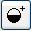
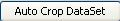

Zoom in - Clicking on the zoom in button
 will make the image one size bigger with each click.
will make the image one size bigger with each click.Zoom out - Clicking on the zoom out button
 will make the image one size smaller with each click.
will make the image one size smaller with each click.Increase contrast - Clicking on the increase contrast button  will make the image contrast one unit bigger with each click.
Reduce contrast - Clicking on the reduce contrast button
 will make the image contrast one unit smaller with each click.
will make the image contrast one unit smaller with each click.Custom Crop - Clicking on the crop button
 allows the user to click on the image and drag the mouse to draw the desired rectangular crop window.
allows the user to click on the image and drag the mouse to draw the desired rectangular crop window.Automatic Crop - Clicking on the automatic crop button  creates a crop window that can be used as a default crop window.